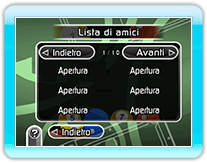
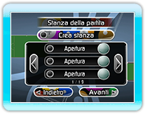
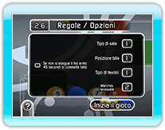

Puoi competere in un Incontro Nintendo Wi-Fi Connection collegandoti alla Nintendo Wi-Fi Connection. Quando sei connesso in modo corretto tramite Nintendo Wi-Fi Connection, scegli il tipo d'incontro a cui vuoi partecipare dal menu di gioco. Puoi scegliere di giocare una partita a 2 o a 4 giocatori.
● Note sugli Incontri Nintendo Wi-Fi Connection
Premendo  non sarà visualizzato il menu pausa.
non sarà visualizzato il menu pausa.
Premendo non sarà visualizzato il menu HOME.
● Codici amico e lista amici
Non puoi giocare una partita con un amico se non l'hai registrato nella tua lista amici. Dai ai tuoi amici il tuo codice amico, visualizzato sulla schermata della lista amici, in modo che anche loro possano registrarti. Puoi inoltre eliminare i codici amico dalla lista amici. Non potrai giocare contro gli amici di cui hai eliminato il codice amico dalla lista amici.

● Gioca contro gli amici
Puoi giocare una partita contro un amico registrato nella tua lista amici. Non potrai giocare contro un amico registrato nella tua lista amici se si scollega dalla Nintendo Wi-Fi Connection o se elimina il tuo codice amico dalla sua lista amici.
● Giocare partite in tutto il mondo
Puoi partecipare ad incontri con giocatori da tutto il mondo. Il tuo avversario sarà selezionato
automaticamente.

● Regole
Non puoi cambiare le regole del gioco durante gli Incontri Nintendo Wi-Fi Connection. Esiste inoltre un limite di tempo per il turno di ogni giocatore. Se non completi il tuo tiro entro il tempo limite, ti verrà chiamato un fallo ed il controllo passerà al giocatore successivo.